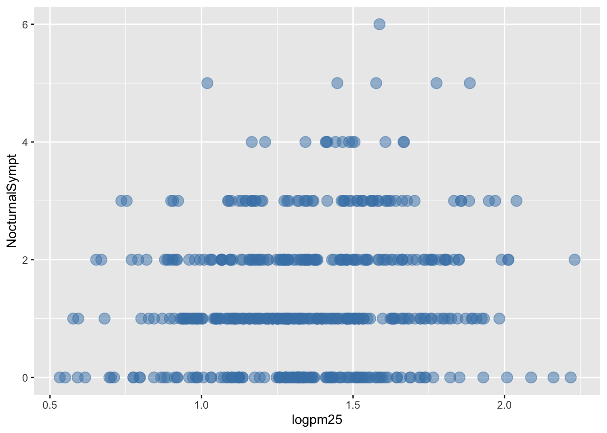
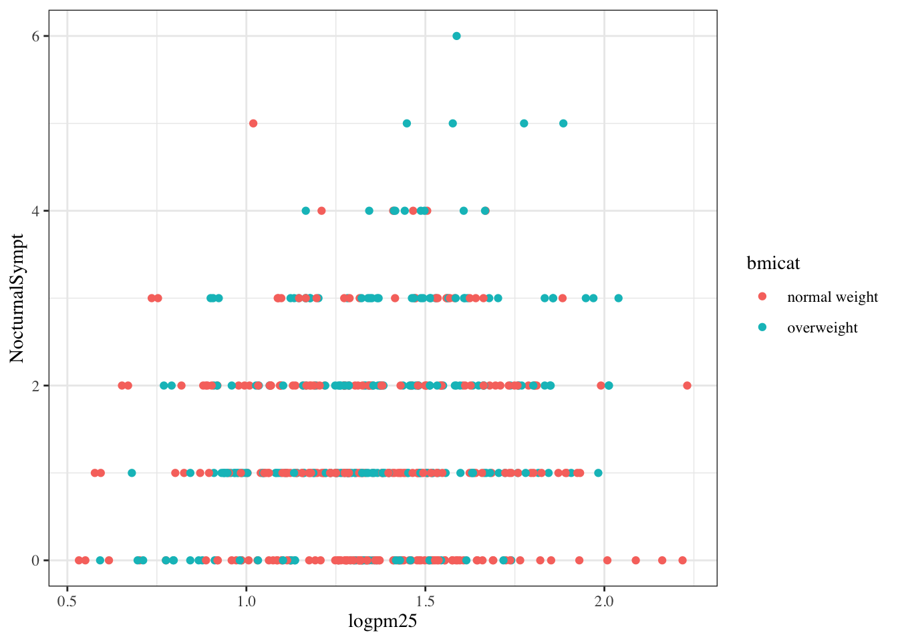
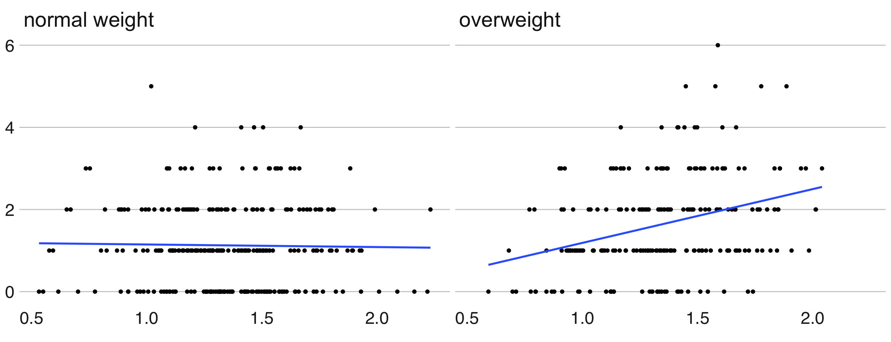
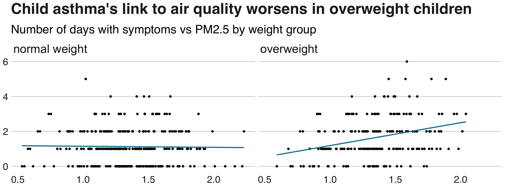

This lecture, as the rest of the course, is adapted from the version Stephanie C. Hicks designed and maintained in 2021 and 2022. Check the recent changes to this file through the GitHub history.
Pre-lecture materials
Read ahead
NoteRead ahead
Before class, you can prepare by reading the following materials:
A student asked today in office hours about resources for learning what functions one can use. I recommended:
The Posit cheatsheets available at https://posit.co/resources/cheatsheets/. I have a binder of them in my office and they can be quite useful when learning about tidyverse packages.
Browsing https://r-graphics.org/ or buying the printed copy to scan quickly the pages of this book, till you find a graphic that looks kind of similar to something you’d like to build.
Searching https://r4ds.hadley.nz/ (or using the printed copy: I bought it to support the authors but mostly use the website when I need to).
Then for after the course, you might want to keep learning about R packages through:
CRAN task views https://cran.r-project.org/web/views/ (there’s a list of like 50 fields, each with something like 200 packages selected for that research field)
As for swirl, even though it was initially developed at JHBSPH Biostatistics, I see at https://github.com/swirldev/swirl_courses that most courses are outdated now: the last updates are mostly from 7 - 10 years ago.
Acknowledgements
Material for this lecture was borrowed and adopted from
The qplot() function’s syntax is very similar to that of the plot() function in base graphics so for those switching over, it makes for an easy transition.
But it is worth knowing the underlying details of how ggplot2 works so that you can really exploit its power.
Basic components of a ggplot2 plot
TipKey components
A ggplot2 plot consists of a number of key components.
A data frame: stores all of the data that will be displayed on the plot
aesthetic mappings: describe how data are mapped to color, size, shape, location
geoms: geometric objects like points, lines, shapes
facets: describes how conditional/panel plots should be constructed
stats: statistical transformations like binning, quantiles, smoothing
scales: what scale an aesthetic map uses (example: left-handed = red, right-handed = blue)
coordinate system: describes the system in which the locations of the geoms will be drawn
It is essential to organize your data into a data frame before you start with ggplot2 (and all the appropriate metadata so that your data frame is self-describing and your plots will be self-documenting).
When building plots in ggplot2 (rather than using qplot()), the “artist’s palette” model may be the closest analogy.
Essentially, you start with some raw data, and then you gradually add bits and pieces to it to create a plot.
TipNote
Plots are built up in layers, with the typically ordering being
Plot the data
Overlay a summary
Add metadata and annotation
For quick exploratory plots you may not get past step 1.
Example: BMI, PM2.5, Asthma
To demonstrate the various pieces of ggplot2 we will use a running example from the Mouse Allergen and Asthma Cohort Study (MAACS). Here, the question we are interested in is
“Are overweight individuals, as measured by body mass index (BMI), more susceptible than normal weight individuals to the harmful effects of PM2.5 on asthma symptoms?”
There is a suggestion that overweight individuals may be more susceptible to the negative effects of inhaling PM2.5.
This would suggest that increases in PM2.5 exposure in the home of an overweight child would be more deleterious to his/her asthma symptoms than they would be in the home of a normal weight child.
We want to see if we can see that difference in the data from MAACS.
TipNote
Because the individual-level data for this study are protected by various U.S. privacy laws, we cannot make those data available.
For the purposes of this lesson, we have simulated data that share many of the same features of the original data, but do not contain any of the actual measurements or values contained in the original dataset.
TipExample
We can look at the data quickly by reading it in as a tibble with read_csv() in the tidyverse package.
# A tibble: 517 × 4
logpm25 logno2_new bmicat NocturnalSympt
<dbl> <dbl> <chr> <int>
1 1.25 1.18 normal weight 1
2 1.12 1.55 overweight 0
3 1.93 1.43 normal weight 0
4 1.37 1.77 overweight 2
5 0.775 0.765 normal weight 0
6 1.49 1.11 normal weight 0
7 2.16 1.43 normal weight 0
8 1.65 1.40 normal weight 0
9 1.55 1.81 normal weight 0
10 2.04 1.35 overweight 3
# ℹ 507 more rows
The outcome we will look at here (NocturnalSymp) is the number of days in the past 2 weeks where the child experienced asthma symptoms (e.g. coughing, wheezing) while sleeping.
The other key variables are:
logpm25: average level of PM2.5 over the course of 7 days (micrograms per cubic meter) on the log scale
logno2_new: exhaled nitric oxide on the log scale
bmicat: categorical variable with BMI status
Building up in layers
First, we can create a ggplot object that stores the dataset and the basic aesthetics for mapping the x- and y-coordinates for the plot.
TipExample
Here, we will eventually be plotting the log of PM2.5 and NocturnalSymp variable.
g <-ggplot(maacs, aes(x = logpm25,y = NocturnalSympt))summary(g)
data: logpm25, logno2_new, bmicat, NocturnalSympt [517x4]
mapping: x = ~logpm25, y = ~NocturnalSympt
faceting: <ggproto object: Class FacetNull, Facet, gg>
compute_layout: function
draw_back: function
draw_front: function
draw_labels: function
draw_panels: function
finish_data: function
init_scales: function
map_data: function
params: list
setup_data: function
setup_params: function
shrink: TRUE
train_scales: function
vars: function
super: <ggproto object: Class FacetNull, Facet, gg>
class(g)
[1] "gg" "ggplot"
You can see above that the object g contains the dataset maacs and the mappings.
Now, normally if you were to print() a ggplot object a plot would appear on the plot device, however, our object g actually does not contain enough information to make a plot yet.
g <- maacs %>%ggplot(aes(logpm25, NocturnalSympt))print(g)
No data to see here!
First plot with point layer
To make a scatter plot, we need add at least one geom, such as points.
Here, we add the geom_point() function to create a traditional scatter plot.
g <- maacs %>%ggplot(aes(logpm25, NocturnalSympt))g +geom_point()
Scatterplot of PM2.5 and days with nocturnal symptoms
How does ggplot know what points to plot? In this case, it can grab them from the data frame maacs that served as the input into the ggplot() function.
Adding more layers
smooth
Because the data appear rather noisy, it might be better if we added a smoother on top of the points to see if there is a trend in the data with PM2.5.
g +geom_point() +geom_smooth()
Scatterplot with smoother
The default smoother is a loess smoother, which is flexible and nonparametric but might be too flexible for our purposes. Perhaps we’d prefer a simple linear regression line to highlight any first order trends. We can do this by specifying method = "lm" to geom_smooth().
g +geom_point() +geom_smooth(method ="lm")
Scatterplot with linear regression line
Here, we can see there appears to be a slight increasing trend, suggesting that higher levels of PM2.5 are associated with increased days with nocturnal symptoms.
In any case, the palmerpenguins data contains observations for 344 penguins. There are 3 different species of penguins in this dataset, collected from 3 islands in the Palmer Archipelago, Antarctica.
Now that we are familiar with palmerpenguins let’s make a scatter plot with flipper_length_mm on the x-axis, bill_length_mm on the y-axis, colored by species, and a smoother by adding a linear regression.
# try it yourselflibrary("palmerpenguins")penguins
# A tibble: 344 × 8
species island bill_length_mm bill_depth_mm flipper_length_mm body_mass_g
<fct> <fct> <dbl> <dbl> <int> <int>
1 Adelie Torgersen 39.1 18.7 181 3750
2 Adelie Torgersen 39.5 17.4 186 3800
3 Adelie Torgersen 40.3 18 195 3250
4 Adelie Torgersen NA NA NA NA
5 Adelie Torgersen 36.7 19.3 193 3450
6 Adelie Torgersen 39.3 20.6 190 3650
7 Adelie Torgersen 38.9 17.8 181 3625
8 Adelie Torgersen 39.2 19.6 195 4675
9 Adelie Torgersen 34.1 18.1 193 3475
10 Adelie Torgersen 42 20.2 190 4250
# ℹ 334 more rows
# ℹ 2 more variables: sex <fct>, year <int>
facets
Because our primary question involves comparing overweight individuals to normal weight individuals, we can stratify the scatter plot of PM2.5 and nocturnal symptoms by the BMI category (bmicat) variable, which indicates whether an individual is overweight or not.
To visualize this we can add a facet_grid(), which takes a formula argument.
TipExample
We want one row and two columns, one column for each weight category. So we specify bmicat on the right hand side of the forumla passed to facet_grid().
g +geom_point() +geom_smooth(method ="lm") +facet_grid(. ~ bmicat)
Scatterplot of PM2.5 and nocturnal symptoms by BMI category
Now it seems clear that the relationship between PM2.5 and nocturnal symptoms is relatively flat among normal weight individuals, while the relationship is increasing among overweight individuals.
This plot suggests that overweight individuals may be more susceptible to the effects of PM2.5.
Modifying geom properties
You can modify properties of geoms by specifying options to their respective geom_*() functions.
map aesthetics to constants
TipExample
For example, here we modify the points in the scatterplot to make the color “steelblue”, the size larger, and the alpha transparency greater.
g +geom_point(color ="steelblue", size =4, alpha =1/2)

Modifying point color with a constant
map aesthetics to variables
In addition to setting specific geom attributes to constant values, we can map aesthetics to variables in our dataset.
For example, we can map the aesthetic color to the variable bmicat, so the points will be colored according to the levels of bmicat.
We use the aes() function to indicate this difference from the plot above.
g +geom_point(aes(color = bmicat), size =4, alpha =1/2)
Mapping color to a variable
Customizing the smooth
We can also customize aspects of the geoms.
For example, we can customize the smoother that we overlay on the points with geom_smooth().
Here we change the line type and increase the size from the default. We also remove the shaded standard error from the line.
The default theme for ggplot2 uses the gray background with white grid lines.
If you don’t find this suitable, you can use the black and white theme by using the theme_bw() function.
The theme_bw() function also allows you to set the typeface for the plot, in case you don’t want the default Helvetica. Here we change the typeface to Times.
TipNote
For things that only make sense globally, use theme(), i.e. theme(legend.position = "none"). Two standard appearance themes are included
theme_gray(): The default theme (gray background)
theme_bw(): More stark/plain
g +geom_point(aes(color = bmicat)) +theme_bw(base_family ="Times")

Modifying the theme for a plot
NoteQuestion
Let’s take our palmerpenguins scatterplot from above and change out the theme to use theme_dark().
# try it yourselflibrary("palmerpenguins")penguins
# A tibble: 344 × 8
species island bill_length_mm bill_depth_mm flipper_length_mm body_mass_g
<fct> <fct> <dbl> <dbl> <int> <int>
1 Adelie Torgersen 39.1 18.7 181 3750
2 Adelie Torgersen 39.5 17.4 186 3800
3 Adelie Torgersen 40.3 18 195 3250
4 Adelie Torgersen NA NA NA NA
5 Adelie Torgersen 36.7 19.3 193 3450
6 Adelie Torgersen 39.3 20.6 190 3650
7 Adelie Torgersen 38.9 17.8 181 3625
8 Adelie Torgersen 39.2 19.6 195 4675
9 Adelie Torgersen 34.1 18.1 193 3475
10 Adelie Torgersen 42 20.2 190 4250
# ℹ 334 more rows
# ℹ 2 more variables: sex <fct>, year <int>
Modifying labels
TipNote
There are a variety of annotations you can add to a plot, including different kinds of labels.
xlab() for x-axis labels
ylab() for y-axis labels
ggtitle() for specifying plot titles
labs() function is generic and can be used to modify multiple types of labels at once
Here is an example of modifying the title and the x and y labels to make the plot a bit more informative.
First, we need to install the bbplot package which is only available from GitHub. To do so, we’ll use remotes::install_github() instead of the typical function install.packages(). The latter only works for R packages distributed by CRAN. If you don’t have remotes installed, you’ll have to install it from CRAN with install.packages("remotes").
Next, let’s try the bbplot::bbc_style() function on a plot we made before.
## Basic ggplot2 object with our datag <- maacs %>%ggplot(aes(logpm25, NocturnalSympt))## A plot we made before, but this time without the SE linesg +geom_point() +geom_smooth(method ="lm", se =FALSE) +facet_grid(. ~ bmicat)
## Now let's add bbplot::bbc_style()g +geom_point() +geom_smooth(method ="lm", se =FALSE) +facet_grid(. ~ bmicat) + bbplot::bbc_style()

Next, we can use the blue color that the BBC frequently uses and further improve our plot by adding a title and subtitle.
g +geom_point() +geom_smooth(colour ="#1380A1", method ="lm", se =FALSE) +facet_grid(. ~ bmicat) + bbplot::bbc_style() +labs(title ="Child asthma's link to air quality worsens in overweight children",subtitle ="Number of days with symptoms vs PM2.5 by weight group" )

But maybe that was too confusing for our readers as we are showing a lot of information. We can drop the points and only keep the regression lines. Here we’ll need to map the bmicat variable to the color (or colour) aesthetic, then manually change the colors we want to match the typical yellow and blue colors the BBC uses. See https://htmlcolorcodes.com/, https://www.color-hex.com/, or other similar websites for visualizing HTML Hex color codes. We can also increase the line width.
g +geom_smooth(aes(colour = bmicat), method ="lm", se =FALSE, linewidth =2) +scale_colour_manual(values =c("#FAAB18", "#1380A1")) + bbplot::bbc_style() +labs(title ="Child asthma's link to air quality worsens in overweight children",subtitle ="Number of days with symptoms vs PM2.5 by weight group" )
Voilà! Hopefully our editor likes the plot we made!
## Install ThemePark from GitHubremotes::install_github("MatthewBJane/theme_park")
## Barbie-inspired themeg +geom_smooth(aes(colour = bmicat), method ="lm", se =FALSE, linewidth =2) +scale_colour_manual(values =c("#FAAB18", "#1380A1")) + ThemePark::theme_barbie() +labs(title ="Child asthma's link to air quality worsens in overweight children",subtitle ="Number of days with symptoms vs PM2.5 by weight group" )
## Oppenheimer-inspired themeg +geom_smooth(aes(colour = bmicat), method ="lm", se =FALSE, linewidth =2) +scale_colour_manual(values =c("#FAAB18", "#1380A1")) + ThemePark::theme_oppenheimer() +labs(title ="Child asthma's link to air quality worsens in overweight children",subtitle ="Number of days with symptoms vs PM2.5 by weight group" )
Nowadays you can find many ggplot2 themes online. Just search your favorite movie / keyword + ggplot2 on Google Search or your favorite browser search tool.
## Install ggthemes from CRANinstall.packages("ggthemes")
## Your favorite statistics class theme ;)## I bet that you could fool a few people into thinking## that you are not using R ^_^'g +geom_smooth(aes(colour = bmicat), method ="lm", se =FALSE, linewidth =2) +scale_colour_manual(values =c("#FAAB18", "#1380A1")) + ggthemes::theme_stata() +labs(title ="Child asthma's link to air quality worsens in overweight children",subtitle ="Number of days with symptoms vs PM2.5 by weight group" )
Can we… make them interactive?
Yes we can! Well, not always, but you can always try. Simply save your plot as an object, then feed that object into plotly::ggplotly(). plotly is available from CRAN as is documented at https://plotly.com/r/. That’s how I made a lot of the interactive plots in spatialLIBD that you can see at http://spatial.libd.org/spatialLIBD/.
## Save our plot into an objectg_complete <- g +geom_point(aes(colour = bmicat)) +geom_smooth(aes(colour = bmicat), method ="lm", se =FALSE, linewidth =2) +scale_colour_manual(values =c("#FAAB18", "#1380A1"))## Make it interactive with plotly::ggplotly()plotly::ggplotly((g_complete))
Because ggplot2::ggplot() actually returns an object, we can use plotly::ggplotly() instead of the print() methods from ggplot2 to take the data, aesthetic mappings, etc that we have defined and visualize them in a different graphical system such as plotly. Base R plotting functions do not return objects and we thus cannot easily change the graphical system we are using.
Visual impairments
Similar to how plotly::ggplotly() benefited from having access to the gg + ggplot objects, there is a great GitHub package called colorblindr that can help us simulate different visual impairments. It is available from https://github.com/clauswilke/colorblindr.
## Install colorblindr from GitHubremotes::install_github("clauswilke/colorblindr")
We can use the cvd_grid() function to plot a given ggplot object with colors that simulate deutanomaly, trianomaly, protanomaly, and also show the colors in their desaturated scale. That way, you can get an approximate idea to what individuals with these visual impairments see. Then if you cannot differentiate the colors, you know that they likely won’t be able to differentiate them either.
Now you get the sense that plots in the ggplot2 system are constructed by successively adding components to the plot, starting with the base dataset and maybe a scatterplot. In this section bleow, you can see a slightly more complicated example with an additional variable.
Click here for a slightly more complicated example with ggplot().
Now, we will ask the question
How does the relationship between PM2.5 and nocturnal symptoms vary by BMI category and nitrogen dioxide (NO2)?
Unlike our previous BMI variable, NO2 is continuous, and so we need to make NO2 categorical so we can condition on it in the plotting. We can use the cut() function for this purpose. We will divide the NO2 variable into tertiles.
First we need to calculate the tertiles with the quantile() function.
Then we need to divide the original logno2_new variable into the ranges defined by the cut points computed above.
maacs$no2tert <-cut(maacs$logno2_new, cutpoints)
The not2tert variable is now a categorical factor variable containing 3 levels, indicating the ranges of NO2 (on the log scale).
## See the levels of the newly created factor variablelevels(maacs$no2tert)
[1] "(0.342,1.23]" "(1.23,1.47]" "(1.47,2.17]"
The final plot shows the relationship between PM2.5 and nocturnal symptoms by BMI category and NO2 tertile.
## Setup ggplot with data frameg <- maacs %>%ggplot(aes(logpm25, NocturnalSympt))## Add layersg +geom_point(alpha =1/3) +facet_grid(bmicat ~ no2tert) +geom_smooth(method ="lm", se =FALSE, col ="steelblue") +theme_bw(base_size =10) +labs(x =expression("log "* PM[2.5])) +labs(y ="Nocturnal Symptoms") +labs(title ="MAACS Cohort")
`geom_smooth()` using formula = 'y ~ x'
PM2.5 and nocturnal symptoms by BMI category and NO2 tertile
Final Questions
Here are some post-lecture questions to help you think about the material discussed.
NoteQuestions
What happens if you facet on a continuous variable?
Read ?facet_wrap. What does nrow do? What does ncol do? What other options control the layout of the individual panels? Why doesn’t facet_grid() have nrow and ncol arguments?
What geom would you use to draw a line chart? A boxplot? A histogram? An area chart?
What does geom_col() do? How is it different to geom_bar()?